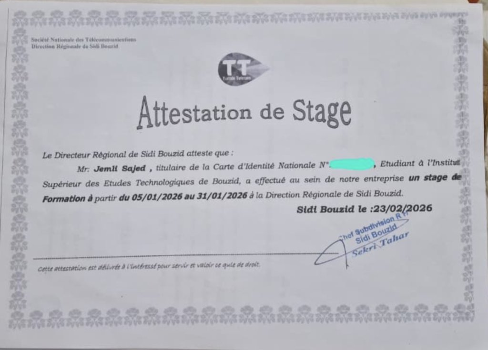
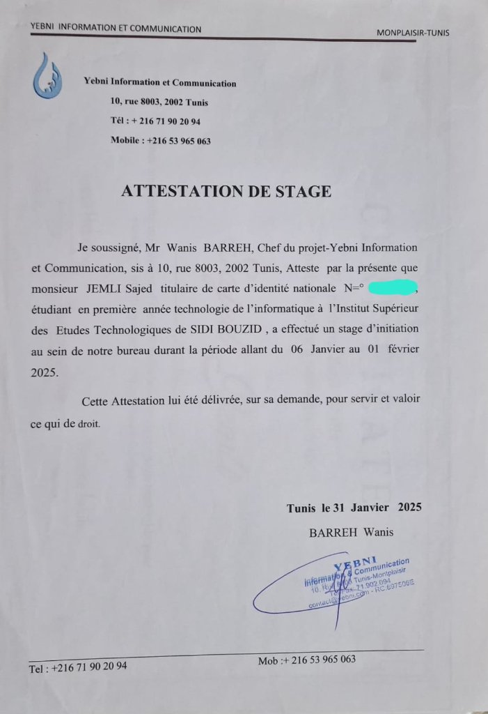
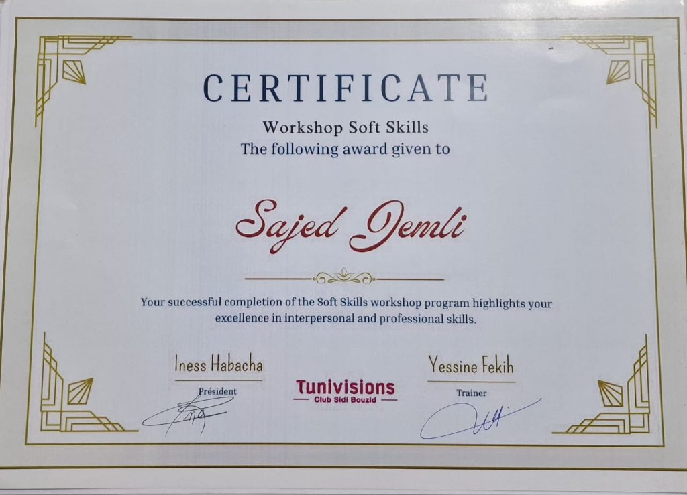
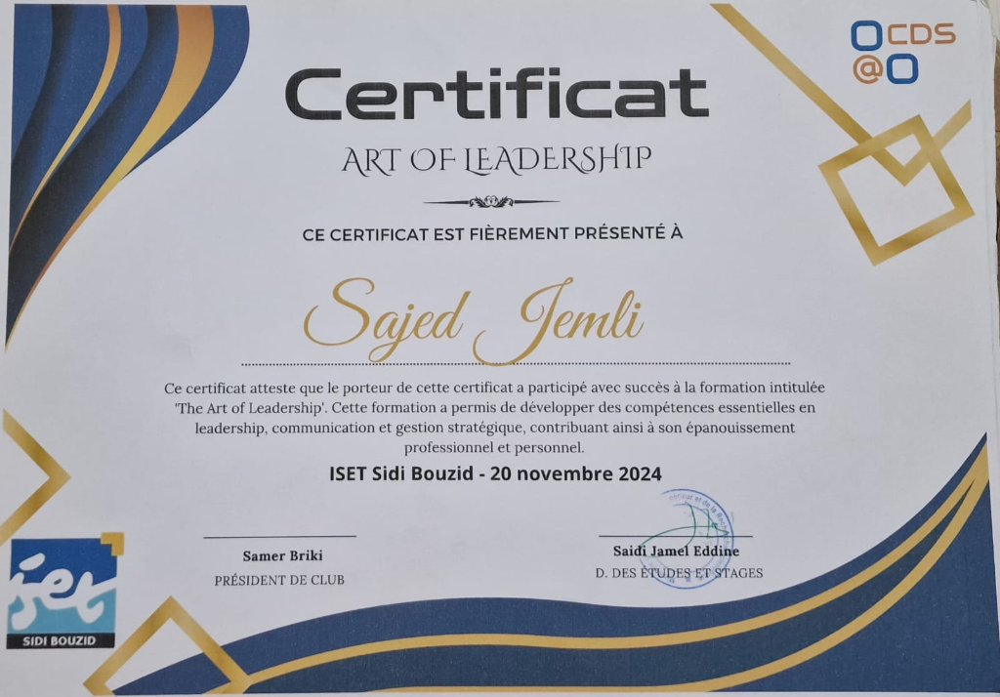

Étudiant en 3ᵉ année RSI à l'ISET Sidi Bouzid. Spécialisation progressive en cybersécurité réseau — Cisco, OSPF, ACL, SSH — à travers le projet NetGuardian Pro et deux stages en entreprise (TT Telecom & Yebni). Objectif : Analyste SOC junior / Technicien cybersécurité.
Je suis étudiant en 3ᵉ année Réseaux et Systèmes Informatiques à l'ISET Sidi Bouzid. Ma spécialisation se construit progressivement autour de la cybersécurité réseau : sécurisation d'infrastructures Cisco, analyse de trafic et détection d'incidents.
Mon projet académique Cisco NetGuardian Pro m'a permis de concevoir et déployer un réseau d'entreprise complet de bout en bout sous Packet Tracer : VLAN, trunks 802.1Q, routage OSPF, ACL étendues, SSH et Port Security. Ce projet est ma principale preuve technique, que je peux défendre en détail lors d'un entretien.
Deux stages validés en entreprise — Yebni Information & Communication (Tunis) et Telecom Sidi Bouzid (Direction Régionale TT) — m'ont exposé à la réalité des environnements réseau professionnels : maintenance, diagnostic d'incidents, configuration d'équipements Cisco en production.
Mon objectif à court terme : un stage PFE ou premier poste d'analyste SOC junior pour développer une expérience pratique en surveillance d'infrastructure. À moyen terme : certification Cisco CyberOps Associate et évolution vers l'ingénierie en cybersécurité.
Niveaux évalués de 1 à 5, avec preuve pour chaque compétence (Livrable 1).
Réseau d'entreprise sécurisé de bout en bout, conçu et déployé sous Cisco Packet Tracer.
Dépôts publics disponibles sur github.com/Sajed-sj ↗
Jeu d'apprentissage assisté par intelligence artificielle — interface interactive pour révisions et quiz.
Application de nutrition et de diète assistée par IA — recommandations personnalisées basées sur les données utilisateur.
Projet académique Java — travaux et exercices de programmation réalisés durant la formation ISET.
Dépôt personnel de configuration et de ressources.
Deux stages validés avec attestations officielles disponibles ci-dessous.
Documents officiels validant mon parcours académique et extra-académique.




Disponible pour un stage PFE ou un premier poste junior en cybersécurité.
Je réponds sous 24h.